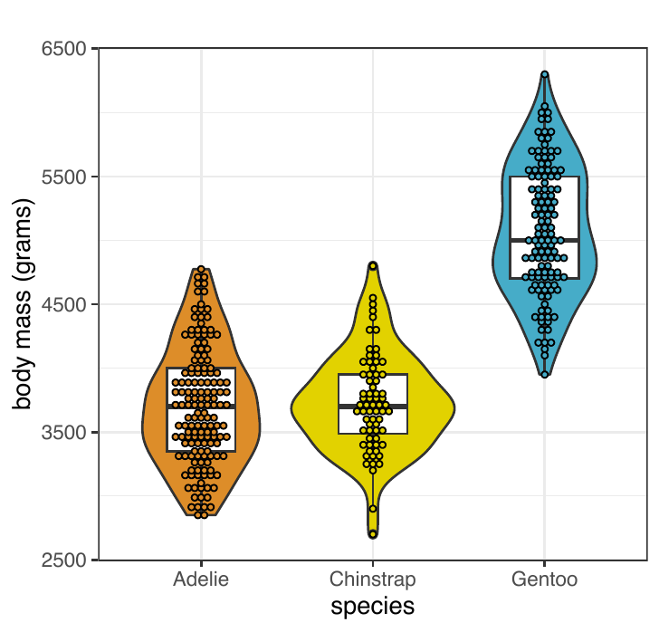
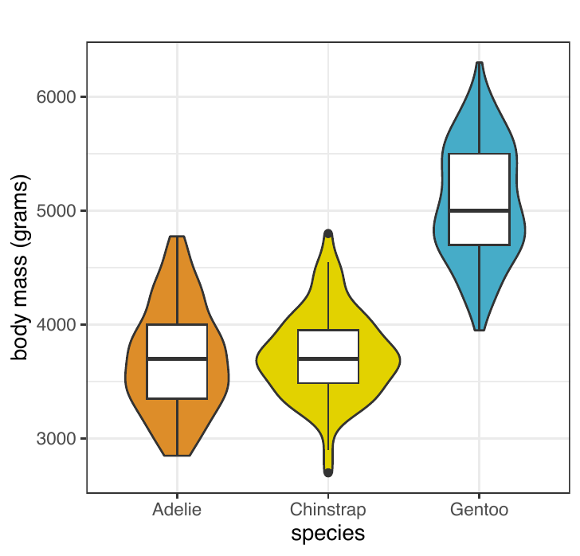
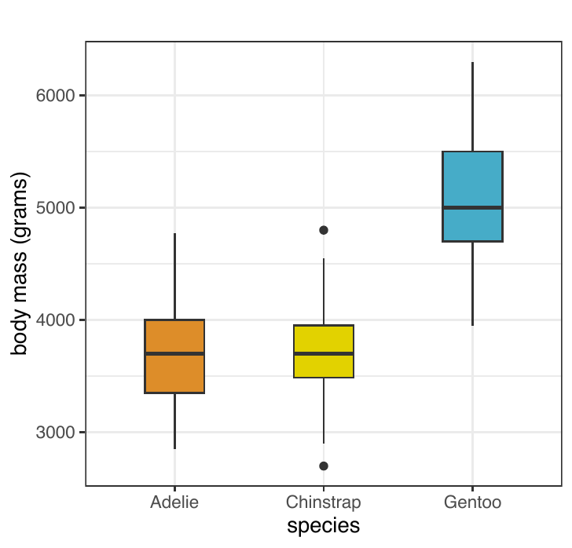
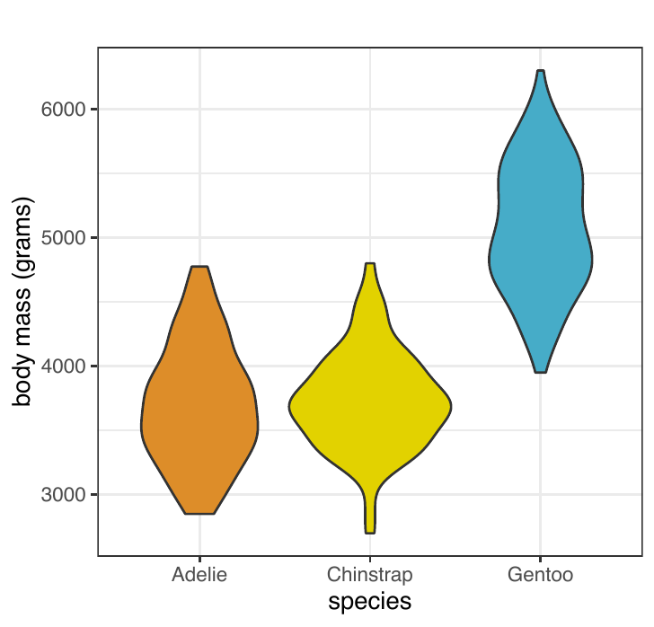
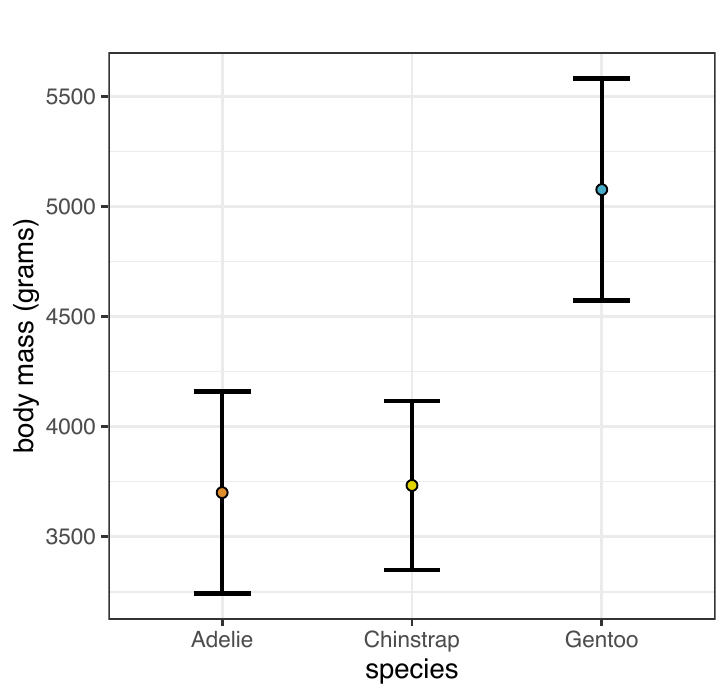
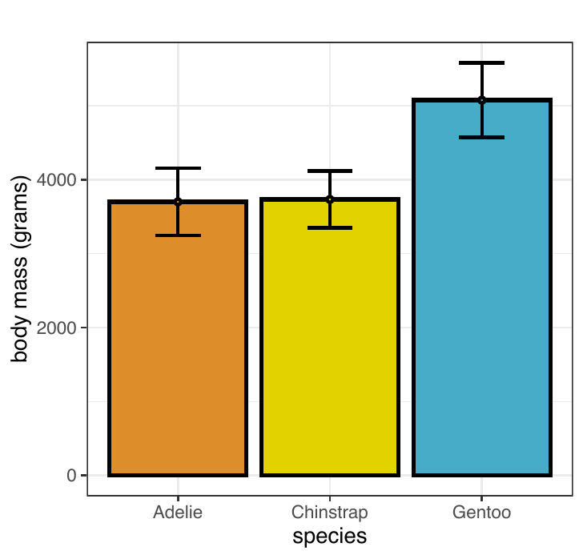
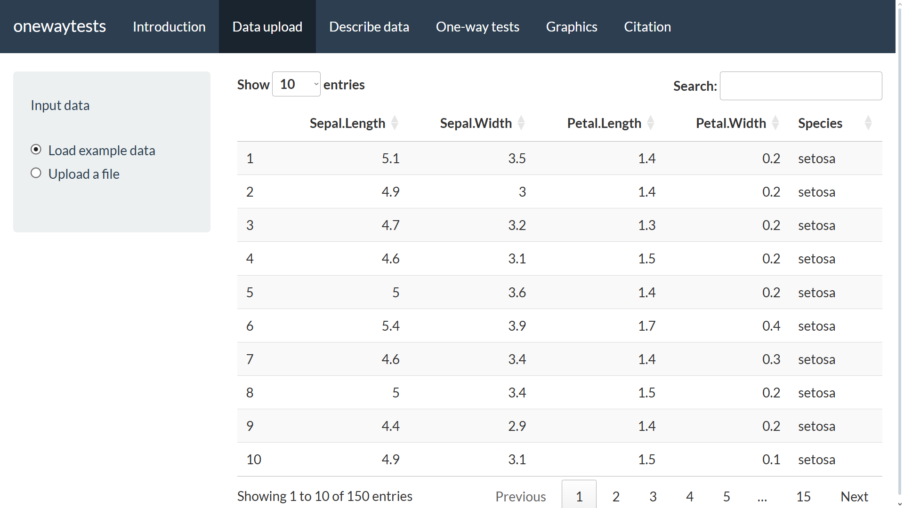
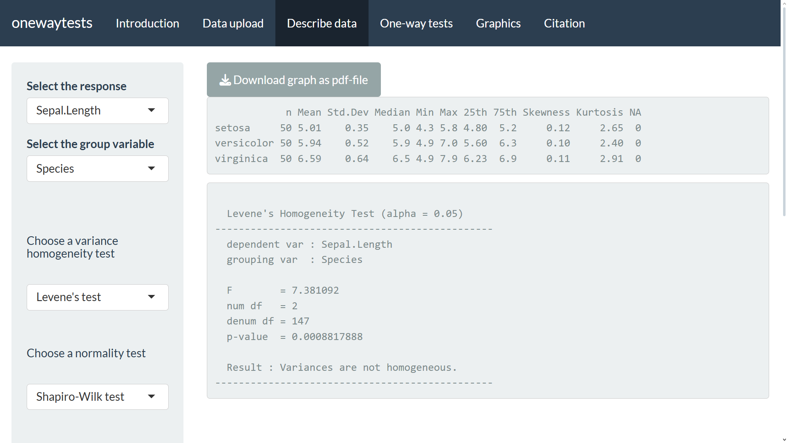
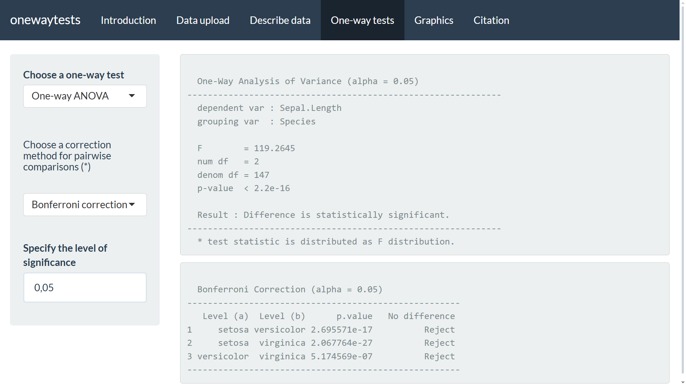
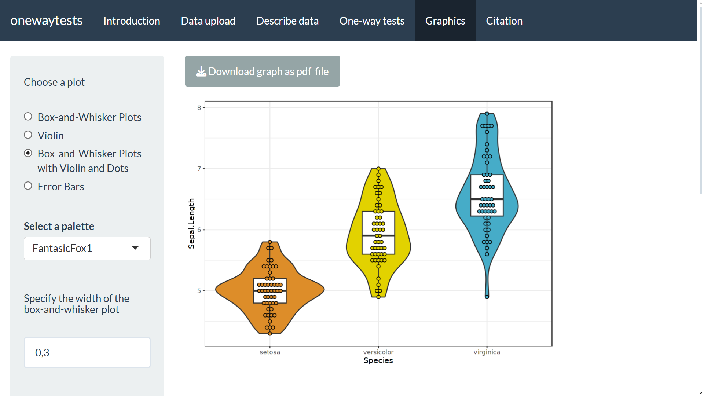

One-way tests in independent groups designs are widely used statistical techniques in various fields, including but not limited to medical sciences, engineering, social sciences, economics, psychology, and biology. These techniques are commonly applied in scientific experiments to thoroughly investigate and understand the impact of the independent variable on the dependent variable. In this paper, we introduce the latest version of , which offers a wide range of tools conducting analysis for one-way independent groups layout. In this study, we make significant improvements to the onewaytests package by adding 15 new one-way tests to the existing seven tests available in the work done by (Dag et al. 2018). With this update, users now have a total of 22 tests for comprehensive assessments. We completely rewrite the function of the graphical approaches from scratch to improve the functionality and customization options. By doing so, we incorporate new features and enhancements while preserving the core functionality of the function. We update the web tool of R package, making it compatible with mobile devices. Users can now conveniently access and utilize the web tool on their smartphones or tablets, making statistical analysis more accessible and convenient. In addition to the aforementioned features, the package offers the capability to perform exploratory data analysis, such as generating descriptive statistics, investigating the homogeneity of variances and normality of data in each group through various tests and plots. Moreover, it provides functionality for conducting two sample tests and performing pairwise comparison methods, enabling users to delve deeper into their data analysis and draw more accurate conclusions. The package is readily available for download on the Comprehensive R Archive Network (CRAN). Additionally, users can access the associated web-tool at http://www.softmed.hacettepe.edu.tr/onewaytests.
One-way independent groups designs are fundamental and widely used designs in observational and experimental research. One-way fixed effect analysis of variance (ANOVA) is the most common test used in these designs. One-way ANOVA is a parametric method based on comparing the means of independent groups. The assumptions of normality in each independent group and homogeneity of variance between groups must be satisfied to perform one-way ANOVA. However, it is often not possible to find datasets that meet both of these assumptions in practice. Therefore, there are a great number of alternative tests to one-way ANOVA for analyzing one-way independent groups designs. Among these tests, Welch’s heteroscedastic F test (Welch 1951), Welch’s heteroscedastic F test with trimmed means and Winsorized variances (Welch 1951), Alexander-Govern test (Alexander and Govern, n.d.), James second order test (James 1951), Brown-Forsythe test (Brown and Forsythe 1974b, 1974a) and Kruskal-Wallis test (Kruskal and Wallis 1952) are provided in package version 1.5 (Dag et al. 2017). The package is compact and comprehensive since it provides descriptive statistics, assessment of the assumptions, and summarizes results using various graphics in addition to performing statistical analysis. This helps researchers evaluate their data from multiple angles.
In this paper, we present the upgraded version of package, 3. This version includes Alvandi’s F test (Sadooghi-Alvandi et al. 2012), Alvandi’s generalized p-value test (Sadooghi-Alvandi et al. 2012), approximate F test (Asiribo and Gurland 1990), adjusted Welch’s heteroscedastic F test (Welch 1951), B square test (Özdemir and Kurt 2006), Box F test (Box 1954), Cochran F test (Cochran 1937), generalized test equivalent to parametric bootstrap test (Weerahandi and Krishnamoorthy 2019), generalized test equivalent to fiducial test (Weerahandi and Krishnamoorthy 2019), Johansen F test (Johansen 1980), modified Brown-Forsythe test (Mehrotra 1997), permutation F test (Berry et al. 2002), Scott-Smith F test (Scott and Smith 1971), Welch-Aspin test (Aspin 1948), and Weerahandi’s generalized F test (Weerahandi 1995) in addition to the tests in version 1.5. Along with the newly added 15 tests, there are a total of 22 tests for one-way independent groups designs in this extended version. Additionally, two independent samples tests including Student’s t-test, Welch’s t-test, and Mann-Whitney U test are added to the package.
The graphical approaches in the package are restructured from scratch to enhance the functionality and customization options of the graphical approaches. We add new features and enhancements providing even more flexibility in visualizing data while maintaining the core functionality. With these updates and improvements, the new version of the package offers a more comprehensive and versatile set of tools for data visualization, empowering users to create visually compelling and informative graphics effortlessly.
There is a user-friendly web application based on package. This web-tool is updated with the addition of 15 one-way independent groups tests, along with graphical improvements. Also, web-tool is made compatible with mobile devices. The web-tool is freely available at http://www.softmed.hacettepe.edu.tr/onewaytests.
The paper is organized as follows. First, one-way tests in independent groups designs with theoretical backgrounds are presented. Second, an extensive application of 3 package is demonstrated by using a real dataset. Third, the upgraded web application is introduced. At last, general conclusions and further research are provided.
In this section, the statistical tests that are used to test the equality of several populations in the one-way independent groups designs are explained. Among these tests, Alvandi’s F test (Sadooghi-Alvandi et al. 2012), Alexander-Govern test (Alexander and Govern, n.d.), Alvandi’s generalized p-value test (Sadooghi-Alvandi et al. 2012), ANOVA, approximate F test (Asiribo and Gurland 1990), adjusted Welch’s heteroscedastic F test (Welch 1951), B square test (Özdemir and Kurt 2006), Brown-Forsythe test (Brown and Forsythe 1974b, 1974a), Box F test (Lix and Keselman 1998), Cochran F test (Cochran 1937), Weerahandi’s generalized F test (Weerahandi 1995), James second order test (James 1951, 1954), Johansen F test (Johansen 1980), Modified Brown-Forsythe test (Mehrotra 1997), Permutation F test (Berry et al. 2002), Scott Smith F test (Scott and Smith 1971), Welch-Aspin test (Aspin 1948), Welch’s heteroscedastic F test (Welch 1951), generalized test equivalent to parametric bootstrap test (Weerahandi and Krishnamoorthy 2019), and generalized test equivalent to fiducial test (Weerahandi and Krishnamoorthy 2019) test the null hypothesis \(H_0: \mu_1=\mu_2= \ldots =\mu_k\) versus alternative \(H_1:\) at least one \(\mu_j\) (\(j=1,2,\ldots, k\)) is different. All of these tests are parametric, with the exception of Permutation F test. Permutation F test evaluates mean differences without depending on the theoretical F distribution. Rather, it relies on an empirical F distribution produced using permutations. Therefore, this test does not require the assumption of normality (Winkler et al. 2014). Welch’s heteroscedastic F test with trimmed means and Winsorized variances (Welch 1951) tests the equality of population trimmed means, \(H_0: \mu_{t1}=\mu_{t2}= \ldots =\mu_{tk}\) versus alternative \(H_1:\) at least one \(\mu_{tj}\) is different, where \(\mu_{tj}\) represents the trimmed mean of the jth population (\(j=1,2,\ldots, k\)). Kruskal-Wallis test (Kruskal and Wallis 1952) tests the null hypothesis \(H_0: \theta_1=\theta_2= \ldots =\theta_k\) versus alternative \(H_1:\) at least one \(\theta_j\) (\(j=1,2,\ldots, k\)) is different. For Kruskal-Wallis test, \(\theta_j\) represents sum of the ranks of the jth population. One-way independent tests that are used in this study are shown in Table \[tbl:Table1\].
| Name | Function | Method* | Test Type\(\dagger\) |
| One-way ANOVA | aov.test | aov | \(Param\) |
| Welch’s heteroscedastic F test | welch.test | welch | \(Param\) |
| Welch’s heteroscedastic F test with trimmed and Winsorized Variances | welch.test | welch_tw | \(Param\) |
| Brown-Forsythe test | bf.test | bf | \(Param\) |
| Alexander-Govern test | ag.test | ag | \(Param\) |
| James Second Order test | james.test | james | \(Param\) |
| Kruskal-Wallis test | kw.test | kw | \(NonParam\) |
| Name | Function | Method* | Test Type\(\dagger\) |
| Alvandi’s F test | af.test | af | \(Param\) |
| Alvandi’s generalized p-value test | agp.test | agp | \(Param\) |
| Approximate F test | ap.test | ap | \(Param\) |
| Adjusted Welch’s heteroscedastic F test | aw.test | aw | \(Param\) |
| B square test | b2.test | b2 | \(Param\) |
| Box F test | box.test | box | \(Param\) |
| Cochran F test | cochran.test | cochran | \(Param\) |
| Generalized test equivalent to Param bootstrap test | gp.test | gtb | \(Param\) |
| Generalized test equivalent to fiducial test | gp.test | gtf | \(Param\) |
| Johansen F Test | johansen.test | johansen | \(Param\) |
| Modified Brown-Forsythe test | mbf.test | mbf | \(Param\) |
| Permutation F test (PF) | pf.test | pf | \(NonParam\) |
| Scott-Smith test | ss.test | ss | \(Param\) |
| Welch-Aspin test | wa.test | wa | \(Param\) |
| Weerahandi’s generalized F test | wgf.test | wgf | \(Param\) |
Sadooghi-Alvandi et al. (2012) presented a practical test that can be used when the group variances are heterogeneous. The test statistic for Alvandi’s F test is \[\begin{equation} F_{AF}=\displaystyle\sum\limits_{j=1}^k (n_j/S_j^2)(\bar{X}_{j}-\bar{X}_{w})^2, \end{equation}\] where \[\begin{equation} \label{eq:Xw} \bar{X}_{w}=\displaystyle\sum\limits_{j=1}^k (n_j/S_j^2)\bar{X_j}/\displaystyle\sum\limits_{j=1}^k (n_j/S_j^2). \end{equation} \tag{1}\] The weights for each group are $ w_j=({n_j/S_j2})/{_{j=1}k (n_j/S_j^2)}$. The null hypothesis is rejected when $ F_{AF}(k-1) F_{k-1, r}$ where r is obtained with $ r={2m_T}/({m_T-(k-1)})$ and $ m_T={{j=1}^k (1-w_j)(n{j}-1)/(n_j-3)}$.
Alexander and Govern (n.d.) proposed the following test statistic as an alternative to ANOVA when group variances are not homogeneous:
\[\begin{equation} \label{AG} \chi_{AG}^2 = \sum_{j=1}^{k} z_j^2. \end{equation} \tag{2}\] In Equation ((2)), \[\begin{equation*} z_j = c+\frac{(c^3+3c)}{b}-\frac{(4c^7+33c^5+240c^3+855c)}{(10b^2+8bc^4+1000b)}, \end{equation*}\] where \(c=[\alpha \times ln (1+t_j^2/v_j)] ^{1/2}\), \(b=48\alpha^2\), \(\alpha =v_j-0.5\) and \(v_j = (n_j - 1)\). The t statistic for each group is
\[\begin{equation} \label{t} t_j=\frac{\bar{X}_{j}-X^+}{S_j^{'}}. \end{equation} \tag{3}\] The variance-weighted mean is \(X^+=\sum_{j=1}^{k}w_j\bar{X}_{j}\), the standard error for the jth group is \(S_j^{'}=\left[{\sum_{i=1}^{n_j}(X_{ij}-\bar{X}_{j})^2}/{n_j (n_j-1)}\right]^{1/2}\) and weights for each group are \[\begin{equation} \label{eq:wj} {w}_{j}={(1/S_j^{'2})/}{\sum_{j=1}^{k}(1/S_j^{'2})}. \end{equation} \tag{4}\] The null hypothesis is rejected when $ {AG}^2 {k-1}^2$.
Sadooghi-Alvandi et al. (2012) presented a generalized p-value test. Alvandi’s generalized p-value can be computed by simulation according to the following two steps (Cavus et al. 2021). The first step is computing \(T_w\) value (observed value of Cochran’s statistic) \[\begin{equation} T_w=\displaystyle\sum\limits_{j=1}^k (n_j/S_j^2)(\bar{X}_{j}-\bar{X}_{w})^2, \end{equation}\] where \(\bar{X}_{w}\) is calculated as Equation (1). Second step starts with generating independent variables \(x_j\) from N(0,1) and \(U_j\) from \(\chi^2_{n_j-1}\) (j=1,2,...,k). Then T value is calculated as follows: \[\begin{equation} T=\displaystyle\sum\limits_{j=1}^n \frac{n_j-1}{U_j}[X_j-q_j\tilde{X}]^2. \end{equation}\] \(\tilde{X}\) in the equation can be computed as $ _{j=1}^k q_jx_j$ where \[\begin{equation} q_j=\sqrt[]{{(n_j/S_j^2)}/{\displaystyle\sum\limits_{j=1}^k (n_j/S_j^2)}}. \end{equation}\] The second step repeats a large number of times (\({M}\)). Let \({M(t)}\) be the number of times that $ T $, then Alvandi’s generalized p-value is obtained as \({M(t)}/{M}\).
The one-way fixed effects analysis of variance (ANOVA) is a powerful test if the assumptions of normality and variance homogeneity are met. The test statistic for ANOVA is \[\begin{equation} \label{anova} F=\frac{\sum\limits_{j=1}^k(n_j)(\bar{X}_{j}-\bar{X}_{..})^2/(k-1)}{\sum\limits_{i=1}^n\sum\limits_{j=1}^k(X_{ij}-\bar{X}_{j})^2/(n-k)}. \end{equation} \tag{5}\] In Equation (5), \(n\) is the total number of observations and \(\bar{X}_{..}\) is the overall mean, where \(\bar{X}_{..}=\displaystyle\sum_{j}^{k} n_j(\bar{X}_{j})/n\). The null hypothesis is rejected when $ F F_{k-1, n-k}$.
(Asiribo and Gurland 1990) proposed the following test statistic that has approximately F distribution with \(f_{1}\) and \(f_{2}\) degrees of freedom: \[\begin{equation} U_{0}=\frac{{n}{-k}}{k-1}\frac{{\displaystyle\sum\limits_{j=1}^k {n_{j}{(\bar{X}_{j}-\bar{X}_{..})^2}}}{}}{{\displaystyle\sum\limits_{j=1}^k f_jS_j^2}}, \end{equation}\]
\[\begin{equation*} f_1=\frac{(\displaystyle\sum\limits_{j=1}^k 1-\frac{n_j}{n} )\sigma_j^2)^2}{\frac{1}{n^2}(\displaystyle\sum\limits_{j=1}^k n_j\sigma_j^2)^2+\displaystyle\sum\limits_{j=1}^k (1-\frac{2n_j}{n})\sigma_j^4} , \ f_2=\frac{(\displaystyle\sum\limits_{j=1}^k f_j\sigma_j^2)^2}{\displaystyle\sum\limits_{j=1}^k f_j\sigma_j^4}. \end{equation*}\] The null hypothesis is rejected when $ U_{0}>F_{f_{1}, f_{2}}$ where \(b=\frac{{n}{-k}}{n(k-1)}({\displaystyle\sum\limits_{j=1}^k (n-n_j)\sigma_j^2})/({\displaystyle\sum\limits_{j=1}^k f_j\sigma_j^2}).\)
Welch (1951) proposed a heteroscedastic alternative to ANOVA that is robust to the violation of variance homogeneity assumption. The test statistic for adjusted Welch’s heteroscedastic F test is calculated as follows (Cavus et al. 2021): \[\begin{equation} \label{welch} F_w=\frac{\displaystyle\sum_{j=1}^kw_{j}(\bar{X}_{j}-\sum_{j=1}^kh_{j}\bar{X}_{j})^2}{(k-1)+2(k-2)(1/(k+1))\displaystyle\sum_{j=1}^k(1/n_{j}-1)(1-h_{j})^2}. \end{equation} \tag{6}\] In Equation ((6)), \(w_{j}=n_{j}/((n_{j}-1)/(n_{j}-3)s_j^2)\), and \(h_{j}=w_{j}/\displaystyle\sum_{j=1}^kw_{j}\). The null hypothesis is rejected when \(F_w\) > \(F_{{k-1}, 1/ \nu}\) where \(\nu\) is obtained with \(v=\frac{(k^2-1)/3}{\displaystyle\sum_{j=1}^k(1-h_{j})^2/(n_{j}-1)}\).
(Özdemir and Kurt 2006) developed a new and simple approximation procedure which intends to create an easy and applicable alternative to ANOVA. The test statistic is \[\begin{equation} B^2=\displaystyle\sum\limits_{j=1}^k[c \lbrace log (1+\frac{(\frac{\bar{X}_j{-X^+}}{S_{\bar{X}_j}})^2}{v_j})\rbrace^\frac 1 2]^2 , \end{equation}\] where \(c=({4v_j^2+({5(2z_c^2+3)})/{24}})/({4v_j^2+v_j+({4z_c^2+9})/{12}})v_j^\frac1 2\), \(X^+=\displaystyle\sum\limits_{j=1}^k w_j\bar{X}_j\), the weights are \(w_j={({1}/{S_{\bar{X}_j}^2}})/({\displaystyle\sum\limits_{j=1}^k ({1}/{S_{\bar{X}_j}^2})})\) and \(v_j=n_j-1\). The null hypothesis is rejected when $ B2>_{k-1}2$.
Brown and Forsythe (1974b, 1974a) proposed the following test statistic as a modification of ANOVA: \[\begin{equation} F_{BF}=\frac{\displaystyle\sum_{j=1}^{k} n_{j}(\bar{X}_{j}-\bar{X}_{..})^2}{\displaystyle\sum_{j=1}^{k}(1-n_j/n)S_j^2}. \end{equation}\] The null hypothesis is rejected when $ F_{BF}>F_{k-1, f}\(. The degrees of freedom for denominator is calculated as\)(_{j=1}{k}c_j2/(n_j-1))^{-1}$ where \(c_j=({(1-n_j/n)S_j^2})/{\left[ \displaystyle\sum_{j=1}^{k} (1-n_j/n)S_j^2\right ]}\).
Box F test statistic was presented by (Box 1954) as follows:
\[\begin{equation} F_{BOX}=\frac{\displaystyle\sum\limits_{j=1}^kn_j(\bar{X}_{j}-\bar{X}_{})^2}{\displaystyle\sum\limits_{i=1}^k (1-\frac{n_j}{n})S_j^2}. \end{equation}\]
The null hypothesis is rejected when $ F_{BOX}>F_{v_1, v_2}$ where \(v_1={[\displaystyle\sum\limits_{j=1}^k (n-n_{j})S_j^2]^2}/({\displaystyle\sum\limits_{j=1}^k n_{j}S_j^2 )^2+n\displaystyle\sum\limits_{j=1}^k (n-2n_{j})S_j^4})\) and \(v_2={[\displaystyle\sum\limits_{j=1}^k (n_{j}-1)S_j^2]^2}/{\displaystyle\sum\limits_{j=1}^k (n_{j}-1)S_j^4}\).
Cochran (1937) proposed the following test statistic: \[\begin{equation} \label{eq:Cochran} T_{Cochran}={\displaystyle\sum\limits_{j=1}^k ({n_j}/{S_j^2})}(\bar{X}_j-\bar{X}_w)^2, \end{equation} \tag{7}\] where \(\bar{X}_{w}\) is calculated as Equation (1). The null hypothesis is rejected when $ T_{Cochran}>_{k-1}^2$.
(Weerahandi and Krishnamoorthy 2019) showed that the parametric bootstrap test presented by (Krishnamoorthy et al. 2007) is a regular generalized test. The test is carried out as follows. The null hypothesis is rejected when the generalized p-value given by the following formula is less than the desired nominal level, say 0.05:
\[\begin{equation} \label{Pval} p=Pr \left( \sum_{j=1}^k \frac{r_j {Z_j}^2}{U_j} - \frac { \displaystyle\sum_{j=1}^k \frac{ n_j r_j } {s_j^2 U_j} \left( \frac{s_j Z_j}{\sqrt{n_j}} \right) } { \sum_{j=1}^k \frac{ n_j r _j } {s_j^2 U_j} } \geq \sum_{j=1}^k \frac{n_j \left(\bar{x}_j - \bar{x}_s \right)^2 }{s_j^2} \right) , \end{equation} \tag{8}\] where \(Z_i \sim N(0,1)\), \(U_i \sim \chi_{r_i}^2\), \(r_j = n_j -1\), \(\bar{x}_j\) and \(s_j^2\) are the observed sample mean and the observed sample variance from the \(j^{th}\) population, and \(\bar{x}_s\) is the overall weighted sample mean.
(Weerahandi and Krishnamoorthy 2019) also showed that the fiducial test developed by (Li et al. 2011) is also a regular generalized test. The null hypothesis is rejected when the generalized p-value given by the formula below is less than the desired nominal level:
\[\begin{equation} \label{Pval2} p=Pr \left(\sum_{j=1}^k T_j^2 - \frac{ (\sum_{j=1}^k T_j \sqrt[]{n_j} /s_j )^2} {\sum_{j=1}^k n_j/s_j^2} \geq \sum_{j=1}^k \frac{n_j \left(\bar{x}_j - \bar{x}_s \right)^2 }{s_j^2} \right) , \end{equation} \tag{9}\] where \(T_j \sim t_{r_j}\).
James (1951) presented an alternative test to ANOVA. This test statistic is \[\begin{equation} J=\sum_{j}t_j^2, \end{equation}\] where \(t_j\) is given in Equation ((3)). The test statistic, J, is compared to a critical value, \(h(\alpha)\), where \[\begin{equation*} \begin{split} h(\alpha)& =r+\frac{1}{2}(3\chi_4+\chi_2) T + \frac{1}{16}(3\chi_4+\chi_2)^2 \left(1-\frac{k-3}{r}\right)T^2\\ &+\frac{1}{2}(3\chi_4+\chi_2) (8R_{23}-10R_{22}+4R_{21}-6R_{12}^2+8R_{12}R_{11}-4R_{11}^2) \\ &+(2R_{23}-4R_{22}+2R_{21}-2R_{12}^2+4R_{12}R_{11}-2R_{11}^2)(\chi_2-1)\\ &+\frac{1}{4}(-R_{12}^2+4R_{12}R_{11}-2R_{12}R_{10}-4R_{11}^2+4R_{11}R_{10}-R_{10}^2)(3\chi_4-2\chi_2-1)\\ &+(R_{23}-3R_{22}+3R_{21}-R_{20})(5\chi_6+2\chi_4+\chi_2)\\ &+\frac{3}{16}(R_{12}^2-4R_{23}+6R_{22}-4R_{21}+R_{20})(35\chi_8+15\chi_6+9\chi_4+5\chi_2)\\ &+\frac{1}{16}(-2R_{22}+4R_{21}-R_{20}+2R_{12}R_{10}-4R_{11}R_{10}+R_{10}^2)(9\chi_8-3\chi_6-5\chi_4-\chi_2)\\ &+\frac{1}{4}(-R_{22}+R_{11}^2)(27\chi_8+3\chi_6+\chi_4+\chi_2)+\frac{1}{4}(R_{23}-R_{12}R_{11})(45\chi_8+9\chi_6+7\chi_4+3\chi_2). \end{split} \end{equation*}\] For any integers s and t, \(R_{st}=\sum_{j}(n_j-1)^{-s}w_j^t\), \(\chi_{2s}=r^s/\left[ \right (k-1)(k+1)\ldots(k+2s-3)]\) where r is the \((1-\alpha)\) centile of a \(\chi^2\) distribution with \(k-1\) degrees of freedom, \(T=\sum_j(1-w_j)^2/(n_j-1)\) and \(w_j\) is defined in Equation (4). The null hypothesis is rejected when \(J \geqslant h(\alpha)\).
(Johansen 1980) proposed the following test statistics: \[\begin{equation} T_{JF}=\frac{\sum_{j=1}^k(w_j(\bar{x}_j-\sum_{j=1}^k(h_j\bar{x}_j))^{2})}{c}, \end{equation}\] where $ w_j=n_j/j$, $ h_j=w_j/{j=1}^k(w_j)\(,\) c=(k-1)+2A-6A/(k+1)$ and $ A={j=1}k({(1-h_j){2}}/{(n_j-1})$. The null hypothesis is rejected when $ T{JF} F_{v_{1},v_{2}}$ where $ v_1=k-1$ and $ v_2=k-1(k+1)/3A$.
Kruskal and Wallis (1952) presented the nonparametric alternative to ANOVA. The test statistics is
\[\begin{equation} \label{KW} \chi_{KW}^2=\frac{1}{S^2}\left(\sum_{j=1}^k \frac{R_j^2}{n_j}-\frac{n(n+1)^2}{4}\right), \end{equation} \tag{10}\]
where \(r_{ij}\) denote the rank of \(X_{ij}\) when \(n=n_1+ \ldots +n_k\) observations are ranked from smallest to largest. \(R_j=\sum_{i=1}^{n_j} r_{ij}\) is the sum of ranks assigned to the observations in the jth group and \(\bar{R}_j=R_j/n_j\) is the average rank for these observations and
\[\begin{equation*} S^2=\frac{1}{n-1}\left(\sum_{j=1}^k \sum_{i=1}^{n_j} r_{ij}^2 - \frac{n(n+1)^2}{4}\right). \end{equation*}\] The null hypothesis is rejected when \(\chi_{KW}^2\geq \chi_{k-1}^{2}\).
(Mehrotra 1997) proposed a modification of Brown-Forsythe test to overcome the problem of higher than acceptable rate of false positives. The test statistics is \[\begin{equation} F_{MBF}=\frac{\displaystyle\sum\limits_{j=1}^kn_{j}(\bar{X}_{j}-\bar{X}_{..})^2}{\displaystyle\sum\limits_{j=1}^k (1-\frac{n_j}{n})s_j^2}. \end{equation}\] The null hypothesis is rejected when \(F_{MBF}>F_{f_1,f_2}\). \[\begin{equation} \label{mbf_df} f_1=\frac{(\displaystyle\sum\limits_{j=1}^k \sigma_j^2-{\displaystyle\sum\limits_{j=1}^k n_j\sigma_j^2}/{n})^2}{\displaystyle\sum\limits_{j=1}^k \sigma_j^4+({\displaystyle\sum\limits_{j=1}^kn_j\sigma_j^2}/{n})^2-2{\displaystyle\sum\limits_{j=1}^kn_j\sigma_j^4}/{n}}, \ f_2=\frac{[\displaystyle\sum\limits_{j=1}^k (1-{n_j}/{n})\sigma_j^2]^2}{{\displaystyle\sum\limits_{j=1}^k {(1-{n_j}/{n})^2\sigma_i^4}/{(n_j-1)}}}. \end{equation} \tag{11}\] The degrees of freedom of the test statistic can be calculated by using the Equation (11).
(Berry et al. 2002) presented a permutational test as an alternative to ANOVA. The test statistics is
\[\begin{equation} F_{PF}=\frac{{T-n\bar{\bar{x}}^2}/{(k-1)}}{{V-T}/{(n-k)}}, \end{equation}\] where \(T=\displaystyle\sum\limits_{j=1}^kn_j\bar{x}_j^2\), \(V=\displaystyle\sum\limits_{j=1}^k \displaystyle\sum\limits_{i=1}^{n_j} x_{ij}^2\) and \(\bar{\bar{x}}=\frac 1 n \displaystyle\sum\limits_{j=1}^k n_jx_j\). The null hypothesis is rejected when $ F_{PF}>F_{k-1, n-k}$.
(Scott and Smith 1971) proposed the following test statistic where group variances are not homogeneous:
\[\begin{equation} F_{SS}=\displaystyle\sum\limits_{j=1}^k\frac{n_j(\bar{X_j}-\bar{X})^2}{S_j^{*2}}, \end{equation}\] where \(S_j^{*2}=(n_j-1)/(n_j-3)S_j^{2}\). The null hypothesis is rejected when $ F_{SS}>_{k}$.
Aspin (1948) presented a modification of Welch test. The test statistic is \[\begin{equation} F_{WA}=\frac{\displaystyle\sum\limits_{j=1}^k(\bar{X}_{j}-{X^+})^2/S_j^2}{(k-1)[1+\frac{2k-2}{k^2-1}\Lambda}, \end{equation}\] where \(\Lambda=\Sigma[(1-w_j)^2/v_j]\), \(w_j={1/S_j^2}/{\displaystyle\sum\limits_{j=1}^k1/S_j^2}\) and $ X^+$ is the overall mean. The null hypothesis is rejected when \(F_{WA}> F_{v_1,v_2}\) where $ v_1=k-1$ and $ v_2=(k^2-1)/(3)$.
Welch (1951) proposed a robust test that can be used when homogeneity of variance is not met. The test statistic is
\[\begin{equation} \label{welch} F_w=\frac{\sum_{j}w_j(\bar{X}_{.j}-X_{..}^{'})^2/(k-1)}{\left[1+\frac{2}{3}((k-2)\nu) \right ]}, \end{equation} \tag{6}\]
where \(w_j=n_j/S_j^2\), \(S_j^2=\sum_{i}(X_{ij}-\bar{X}_{.j})^2/(n_j-1)\), \(X_{..}^{'} ={\sum_{j}w_j\bar{X}_{.j}}/{\sum_{j}w_j},\) and \[\begin{equation*} \nu =\frac{3\sum_{j}\left[\left(1-\frac{w_j}{\sum_{j}w_j}\right)^2/(n_{j}-1)\right]}{k^2-1}. \end{equation*}\]
The test statistics follow an F distribution with degrees of freedom \(k-1\) and \(1/ \nu\).
(Welch 1951) presented a robust procedure for independent groups design by replacing the usual means and variances with trimmed means and Winsorized variances. Let \(X_{(1)j}\leq X_{(2)j}\leq \ldots \leq X_{(n_j)j}\) be the ordered observations in the jth group and \(g_j= \|\epsilon n_j \|\), \(\epsilon\) is the proportion to be trimmed in each tail of the distribution. After trimming, the effective sample size for the jth group becomes \(h_j=n_j-2g_j\). Then jth sample trimmed mean is \[\begin{equation*} \bar{X}_{tj}=\frac{1}{h_j}\sum_{i=g_j+1}^{n_j-g_j}X_{(i)j}, \end{equation*}\]
and jth sample Winsorized mean is
\[\begin{equation*} \bar{X}_{wj}=\frac{1}{n_j}\sum_{i=1}^{n_j}Y_{ij}, \end{equation*}\] where \[\begin{equation*} Y_{ij} = \begin{cases} X_{(g_{j}+1)j} & \text{if X_{ij} \leq X_{(g_j+1)j} },\\ X_{ij} & \text{if X_{(g_j+1)j}< X_{ij}< X_{(n_j-g_j)j},}\\ X_{(n_j-g_j)j} & \text{if X_{ij}\geq X_{(n_j-g_j)j}.} \end{cases} \end{equation*}\] The sample Winsorized variance is \[\begin{equation*} s_{wj}^2=\frac{1}{(n_j-1)}\sum_{i=1}^{n_j}(Y_{ij}-\bar{X}_{wj})^2, \end{equation*}\] where \(q_j={(n_j-1)s_{wj}^2}/{h_j(h_j-1)}\), \(w_j=\frac{1}{q_j},\), \(U=\sum_{j}w_j,\), \(\tilde{X}=\frac{1}{U}\sum_{j}w_j\bar{X}_{tj},\). The test statistic is \[\begin{equation} \label{Welch2} F_{WT}=\frac{A}{B+1}, \end{equation} \tag{12}\] where \(A=\frac{1}{k-1}\sum_{j}w_j(\bar{X}_{tj}-\tilde{X})^2,\) \(B=\frac{2(k-2)}{k^2-1}\sum_{j}\frac{(1-w_j/U)^2}{h_j-1}\). The null hypothesis is rejected when $ F_{WT}>F_{k-1,’}$ where \(\nu' =\left(\frac{3}{k^2-1}\sum_j \frac{(1-w_j/U)^2}{h_j-1} \right)^{-1}.\)
(Weerahandi 1995) provided an extension of the classical F-test for the case of unequal variances. The generalized p value of that test is obtained by using the following formula involving an expected value of the form \(EG_{k'} ()\), where \(G_{k'}\) is the cdf of the chi-squared distribution with \(k'\) degrees of freedom, and \(k'=k-1\).
\[\begin{equation} p = 1 - EG_{k'} (s_B \left(\frac{n_1 s_1^2}{Y_1}, \frac{n_2 s_2^2}{Y_2}, ..., \frac{n_k s_k^2}{Y_k} , \right) \end{equation}\] where \(Y_j \sim \chi_{r_j}^2\) and \[s_B (w_1,...,w_k) = \sum_{j=1}^{k} w_j \left( \bar{x}_j -\bar{x}_B\right)^2\] is the weighted between group sum of squares, \(w_j\) is the \(j^{th}\) weight, and \(\bar{x}_B\), is the overall weighted sample mean based on the same weights.
The package is a comprehensive collection of functions specifically designed for analyzing data from one-way independent groups designs. This versatile package provides a wide range of tools to facilitate statistical analysis and exploration of such designs. The package includes 22 one-way tests for independent groups designs. In addition to the one-way tests, the package offers functions for generating descriptive statistics, conducting goodness-of-fit tests to check the fundamental assumptions, performing pairwise comparisons, and employing graphical approaches to enhance data interpretation.
In this section, we work on penguins data set, originally published in the work done by (Gorman et al. 2014), available in the package (Horst et al. 2020). For implementation of the package, we utilize body mass as a response variable and species as a grouping variable.
After successfully installing and loading the package, researchers have access to a wide range of functions specifically designed for analyzing one-way independent groups designs. These functions are incredibly useful when researchers compare k populations with respect to continuous outcomes. The one-way tests provided by this package not only calculate the test statistics and p-values, but they also provide the pairwise comparisons for valuable insights by evaluating the hypothesis of the statistical process. With the package, researchers can easily conduct thorough and in-depth analyses of their one-way independent groups designs, gaining valuable insights and making well-informed conclusions.
In this part, we use the functions, originally developed in our previously published work (Dag et al. 2018) to describe data and assess the main assumptions, variance homogeneity and normality.
The functions return the output involving sample size, mean, standard deviation, median, minimum value, maximum value, 25th percentile, 75th percentile, skewness, kurtosis and number of missing values (NA) for one-way layout.
R> library(onewaytests)
R> library(palmerpenguins)
R> describe(body_mass_g ~ species, data = penguins)
n Mean Std.Dev Median Min Max 25th 75th Skewness Kurtosis NA
Adelie 151 3700.662 458.5661 3700 2850 4775 3350.0 4000 0.28249381 2.405611 0
Chinstrap 68 3733.088 384.3351 3700 2700 4800 3487.5 3950 0.24194125 3.463681 0
Gentoo 123 5076.016 504.1162 5000 3950 6300 4700.0 5500 0.06878276 2.257871 0Researchers perform variance homogeneity tests with the function. It offers three variance homogeneity tests; Levene, Bartlett, and Fligner-Killeen tests.
R> homog.test(body_mass_g ~ species, data = penguins, method = "Levene")
Levene's Homogeneity Test (alpha = 0.05)
-----------------------------------------------
dependent var : body_mass_g
grouping var : species
F = 5.335495
num df = 2
denum df = 339
p-value = 0.005230535
Result : Variances are not homogeneous.
----------------------------------------------- Levene’s homogeneity test results reveal that the variances between penguin species are not homogeneous (F = 5.335495, p-value = 0.005230535).
Researchers can assess normality using the function. This function offers six normality tests: Shapiro-Wilk, Shapiro-Francia, Lilliefors (also known as Kolmogorov-Smirnov test), Anderson-Darling, Cramer-von Mises, and Pearson Chi-square tests.
R> nor.test(body_mass_g ~ species, data = penguins, method = "SW")
Shapiro-Wilk Normality Test (alpha = 0.05)
--------------------------------------------------
data : body_mass_g and species
Level Statistic p.value Normality
1 Adelie 0.9807079 0.03239702 Reject
2 Chinstrap 0.9844938 0.56050824 Not reject
3 Gentoo 0.9859276 0.23361649 Not reject
--------------------------------------------------Shapiro-Wilk normality test results state that body masses of chinstrap and gentoo species are normally distributed since the associated p-values (0.56050824 and 0.23361649, respectively) are greater than 0.05. On the other hand, there is enough evidence to reject the normality of body mass for adelie group (p-value = 0.03239702).
In the package, the first argument is specified as a formula where the left-hand side represents sample values and the right-hand side represents groups. The formula must have one variable on each side, with the left side being numeric and the right side being a factor. Otherwise, an error message is returned by each function.
In our previously published paper (Dag et al. 2018), we introduced this package that included seven one-way tests. In this latest version of the package, we have expanded its capabilities by adding 15 new functions specifically designed for one-way independent groups designs. These additional functions provide users with a wider range of options for conducting their analyses. The complete list of all the one-way tests, their corresponding functions, and the method name of the function can be found in Table 1.
In this section, we introduce a generic function called that encompasses a total of 22 one-way tests. By utilizing this function, researchers can conveniently apply any of the available one-way tests. To specify the desired method, researchers simply need to provide the method argument within the function. The list of all methods is provided under Method in Table 1.
All one-way tests can be utilized with separate functions, offering flexibility and versatility. To facilitate ease of use and accessibility, we have meticulously gathered all methods for researchers’ convenience. The function provides four different types of output. We present each of four kinds to introduce the outputs. As an example, we have incorporated Alvandi’s F test, Scott-Smith test, Weerahandi’s generalized F test, and James second order test, which can also be applied using , , , functions, respectively, to demonstrate the practical usage of the function. The test results can be displayed by setting the verbose argument to TRUE. The results are returned as an object of class .
R> out <- onewaytests(body_mass_g ~ species, data = penguins, method = "af")
Alvandi's F Test
data: body_mass_g and species
F = 318.69, num df = 2.000, denom df = 97.832, p-value < 2.2e-16For more comprehensive results, the function can be used, as demonstrated in the example below.
R> summary(out)
Alvandi's F Test (alpha = 0.05)
-------------------------------------------------------
dependent var : body_mass_g
grouping var : species
F = 318.6896
num df = 2
denom df = 97.83241
p-value < 2.2e-16
Result : Difference is statistically significant.
-------------------------------------------------------
* statistic is distributed as F distribution.Here, Alvandi’s test statistic is distributed as F with the degrees of freedom for numerator () and denominator (). Also, is the significance value of the test statistic. Since the p-value is lower than 0.05, there is enough evidence to conclude that the difference between the penguin species in terms of body mass is statistically significant (F = 318.6896, p-value < 2.2\(\times 10^{-16}\)).
R> out <- onewaytests(body_mass_g ~ species, data = penguins, method = "ss",
verbose = FALSE)
R> summary(out)
Scott-Smith Test (alpha = 0.05)
-------------------------------------------------------------
dependent var : body_mass_g
grouping var : species
X-squared = 639.8695
df = 3
p-value < 2.2e-16
Result : Difference is statistically significant.
-------------------------------------------------------------
* statistic is distributed as chi-squared distribution. In the output, Scott-Smith test statistic is distributed as \(\chi^2\) with the degrees of freedom (). Also, is the significance value of the test statistic. Since the p-value is lower than 0.05, one can conclude that the difference between the species is statistically significant (\(\chi_{AG}^2\) = 639.8695, p < 2.2\(\times 10^{-16}\)).
R> out <- onewaytests(body_mass_g ~ species, data = penguins, method = "wgf",
verbose = FALSE)
R> summary(out)
Weerahandi's Generalized F Test (alpha = 0.05)
----------------------------------------------------------
dependent var : body_mass_g
grouping var : species
p-value < 2.2e-16
Result : Difference is statistically significant.
----------------------------------------------------------
* p-value is obtained using Monte Carlo simulation. Here, is the significance value of the test statistic. Since the p-value is lower than 0.05, there is sufficient evidence to conclude that the difference between the penguin species in terms of body mass is statistically significant.
R> out <- onewaytests(body_mass_g ~ species, data = penguins, method = "james",
verbose = FALSE)
R> summary(out)
James Second Order Test (alpha = 0.05)
-----------------------------------------------------------------------------------
dependent var : body_mass_g
grouping var : species
Jtest = 637.3792
CriticalValue = 6.108713
Result : Difference is statistically significant.
-----------------------------------------------------------------------------------
* test statistic is sum of the squared standardized differences and compared to a
critical value. In the output, is the James second order test statistic (J), is the critical value (\(h(\alpha)\)) associated to the significance level (\(\alpha\)). The null hypothesis is rejected when J exceeds \(h(\alpha)\). We conclude that there is a statistically significant difference between the penguin species since \(\textit{J} = 637.3792\) is larger than \(h(\alpha) = 6.108713\).
The package provides the capability to perform pairwise comparisons when
a statistically significant difference is observed. It offers several
options for controlling the type I error rate, including bonferroni,
holm (Holm 1979), hochberg (Hochberg 1988), hommel (Hommel 1988),
BH (Benjamini and Hochberg 1995), BY (Benjamini and Yekutieli 2001),
and none in function. The default is set to "bonferroni". The
development of function is extensively placed in the article work done
by (Dag et al. 2018). The function is capable of recognizing the output
of the function. In this part, we include the pairwise comparison
following to Alvandi’s F test to protect the compactness of the paper.
R> out <- onewaytests(body_mass_g ~ species, data = penguins, method = "af",
verbose = FALSE)
R> paircomp(out, adjust.method = "bonferroni")
Bonferroni Correction (alpha = 0.05)
-----------------------------------------------------
Level (a) Level (b) p.value No difference
1 Adelie Chinstrap 1.000000e+00 Not reject
2 Adelie Gentoo 2.765295e-48 Reject
3 Chinstrap Gentoo 1.639844e-34 Reject
----------------------------------------------------- According to the result obtained by adjusting with Bonferroni method, Gentoo group has statistically greater body mass than Adelie and Chinstrap groups.
In this part, we rewrite the function from scratch. The function offers different graphic types, box-and-whisker plot, violin plot, box-and-whisker plot with violin lines and error bars. These options can be selected in the argument with "boxplot", "violin", "boxplot-violin", and "errorbar", respectively. There exists width argument involving three numeric values. These numeric values specify the widths for the boxes of box-and-whisker plots (defaults to 0.3), violin plots (defaults to 1.0), and the little lines at the tops and bottoms of the error bars (defaults to 0.2), respectively. Also, there exists the argument to draw observations on the plots. The argument offers to change the size of dots. Users can change the colors of the plots with argument. Moreover, researchers can set color palette using function available in package (FantasticFox1 palette is used as a default). Additionally, the theme of plot can be changed with argument. The list of all theme is available with function available in package (Wickham 2016). We use the classic dark-on-light ggplot2 theme as a default theme by setting to argument. Researchers can use standard deviation or standard error with argument while drawing error bars. Also, researchers can add mean bar to error bars with argument. Additionally, the labels of x and y axes and title can be changed with , , and arguments, respectively.
In this part, we draw some graphic types to illustrate the usage of function. These graphics involve box-and-whisker plot with violin line and dots (Figure \[graph:a\]), box-and-whisker plot with violin line (Figure \[graph:b\]), box-and-whisker plot (Figure \[graph:c\]), violin plot (Figure \[graph:d\]), mean \(\pm\) standard deviation graph (Figure \[graph:e\]), and mean \(\pm\) standard deviation graph with mean bar (Figure \[graph:f\]). These graphics can be obtained via following codes:
# Box-and-whisker plot with violin lines and dots
R> gplot(body_mass_g ~ species, data = penguins, type = "boxplot-violin",
width = c(0.4, 0.95, NA), binwidth = 50, ylab = "body mass (grams)")
# Box-and-whisker plot with violin lines
R> gplot(body_mass_g ~ species, data = penguins, type = "boxplot-violin",
width = c(0.4, 0.95, NA), dots = FALSE, ylab = "body mass (grams)")
# Box-and-whisker plot
R> gplot(body_mass_g ~ species, data = penguins, type = "boxplot",
width = c(0.4, NA, NA), dots = FALSE, ylab = "body mass (grams)")
# Violin plot
R> gplot(body_mass_g ~ species, data = penguins, type = "violin",
width = c(NA, 0.95, NA), dots = FALSE, ylab = "body mass (grams)")
# Error bar (mean +- standard deviation)
R> gplot(body_mass_g ~ species, data = penguins, type = "errorbar",
width = c(NA, NA, 0.3), binwidth = 50, ylab = "body mass (grams)",
option = "sd")
# Error bar (mean +- standard deviation) with mean bar
R> gplot(body_mass_g ~ species, data = penguins, type = "errorbar",
width = c(NA, NA, 0.3), binwidth = 50, ylab = "body mass (grams)",
option = "sd", bar = TRUE)





There is an easy-to-use web application available for users, which is built upon the package, providing a convenient and accessible way to perform statistical analysis. This web-tool has recently undergone significant updates and enhancements. One of the major improvements is the addition of 15 one-way independent groups tests, allowing users to conduct a wide range of statistical comparisons. Furthermore, the web-tool now features enhanced graphics, providing users with clear and visually appealing representations of their data. Moreover, we have made the web-tool compatible with a mobile phone application due to the growing popularity of mobile devices. This means that users can conveniently access and utilize the web-tool on their smartphones or tablets, making statistical analysis more accessible and convenient than ever before. Researchers can freely access the web application by visiting the following link, http://www.softmed.hacettepe.edu.tr/onewaytests.
We utilize the package (Chang et al. 2017) to create the web-interface of the package. This tool is specifically designed to cater to the needs of new R users who may not have extensive programming experience, as well as applied researchers who require a straightforward interface for conducting their analyses. Our web tool aims to simplify the process of performing one-way tests and empower users to efficiently explore and interpret their data by harnessing the power of the package. There is an example well-known data set called iris data collected by (Anderson 1935) placed in the web-tool, also available in R, to help users learn the usage of the tool.




Researchers can obtain descriptive statistics using the "Describe data" tab (Figure \[webtool2\]). In this tab, the assumptions of variance homogeneity and normality can be assessed. This tab provides Levene’s test, Bartlett’s test, and Fligner-Killeen test to check for variance homogeneity. It also offers various normality tests (Shapiro-Wilk, Cramer-von Mises, Lilliefors (Kolmogorov-Smirnov), Shapiro-Francia, Anderson-Darling, Pearson Chi-Square tests) and plots (Q-Q plot and Histogram with normal curve) to assess the normality of data in each subgroup.
Users can perform 22 one-way tests (Scott-Smith test, Box F test, Johansen F test, Generalized tests equivalent to Parametric Bootstrap and Fiducial tests, Alvandi’s F test, Alvandi’s generalized p-value, approximate F test, B square test, Cochran test, Weerahandi’s generalized F test, modified Brown-Forsythe test, adjusted Welch’s heteroscedastic F test, Welch-Aspin test, Permutation F test, one-way analysis of variance, Welch’s heteroscedastic F test, Welch’s heteroscedastic F test with trimmed means and Winsorized variances, Brown-Forsythe test, Alexander-Govern test, James second order test, Kruskal-Wallis test) using the "One-way tests" tab (Figure \[webtool3\]). This tab also allows users to make pairwise comparisons (Bonferroni, Holm, Hochberg, Hommel, Benjamini-Hochberg, Benjamini-Yekutieli, no corrections) to investigate the group(s) leading to the differences.
Additionally, researchers can summarize their research findings using well-designed graphics (box-and-whisker plot, violin plot, and error bars) in the "Graphics" tab (Figure \[webtool4\]). The web tool is freely available at http://www.softmed.hacettepe.edu.tr/onewaytests.
One-way tests in independent groups designs are highly popular and extensively utilized statistical techniques in a multitude of fields. These fields encompass medical sciences, engineering, social sciences, economics, psychology, and biology. These techniques allow the researchers for the identification of potential differences among groups, which can further enhance the scientific knowledge and contribute to the advancement of various disciplines.
In this paper, we present the latest version of , which provides a variety of tools for one-way independent groups designs. We make significant enhancements to the package by introducing 15 new one-way tests (Scott-Smith test, Box F test, Johansen F test, Generalized tests equivalent to Parametric Bootstrap and Fiducial tests, Alvandi’s F test, Alvandi’s generalized p-value, approximate F test, B square test, Cochran test, Weerahandi’s generalized F test, modified Brown-Forsythe test, adjusted Welch’s heteroscedastic F test, Welch-Aspin test, Permutation F test) in addition to the existing seven tests (one-way analysis of variance, Welch’s heteroscedastic F test, Welch’s heteroscedastic F test with trimmed means and Winsorized variances, Brown-Forsythe test, Alexander-Govern test, James second order test, Kruskal-Wallis test) in the work done by (Dag et al. 2018). Users now have a total of 22 tests available for comprehensive assessments.
In order to enhance the functionality and customization options of the graphical approaches, we undertake a complete overhaul of their function. Through this process, we not only add new features and enhancements, but also ensure that the core functionality of the function remains intact. This comprehensive revision allows us to fully optimize the graphical approaches, resulting in a more versatile tool for the users.
In this study, we improve the web tool of package, ensuring its compatibility with a wide range of mobile devices. This significant update allows users to effortlessly access and utilize the web tool on their smartphones or tablets. This mobile compatibility opens up a world of possibilities, enabling researchers and statisticians to seamlessly integrate statistical analysis into their daily routines, regardless of their location or device.
The package also provides additional capabilities to enhance your data analysis which involve generating descriptive statistics, examining the homogeneity of variances and normality of data in each group using a variety of tests and plots. Also, it has capability to perform two sample tests. Furthermore, the package offers functionality for conducting pairwise comparison methods after the statistically significant difference among groups is obtained. These features allow users to explore their data from multiple angles in a compact manner and draw more accurate conclusions.
Currently, the package provides a comprehensive set of tools for conducting analysis on one-way independent groups designs. These tools include conducting one-way tests, performing pairwise comparisons, obtaining descriptive statistics, conducting two-sample tests, utilizing graphical approaches, and assessing variance homogeneity and normality through the use of tests and plots. Additionally, it is worth noting that the package and its associated web-tool will be regularly updated to ensure that users have access to the latest features and improvements.
Supplementary materials are available in addition to this article. It can be downloaded at RJ-2026-014.zip
onewaytests, palmerpenguins, wesanderson, ggplot2, shiny
ChemPhys, NetworkAnalysis, Phylogenetics, Spatial, TeachingStatistics, WebTechnologies
This article is converted from a Legacy LaTeX article using the texor package. The pdf version is the official version. To report a problem with the html, refer to CONTRIBUTE on the R Journal homepage.
Text and figures are licensed under Creative Commons Attribution CC BY 4.0. The figures that have been reused from other sources don't fall under this license and can be recognized by a note in their caption: "Figure from ...".
For attribution, please cite this work as
Kasikci, et al., "Onewaytests 3: One-Way Tests Independent Groups Designs - R Package and Its Web-Based Tool", The R Journal, 2026
BibTeX citation
@article{RJ-2026-014,
author = {Kasikci, Merve and Dag, Osman and Sulekli, H. Erkin and Ananda, Malwane M. A. and Weerahandi, Samaradasa},
title = {Onewaytests 3: One-Way Tests Independent Groups Designs - R Package and Its Web-Based Tool},
journal = {The R Journal},
year = {2026},
note = {https://doi.org/10.32614/RJ-2026-014},
doi = {10.32614/RJ-2026-014},
volume = {18},
issue = {1},
issn = {2073-4859},
pages = {1}
}